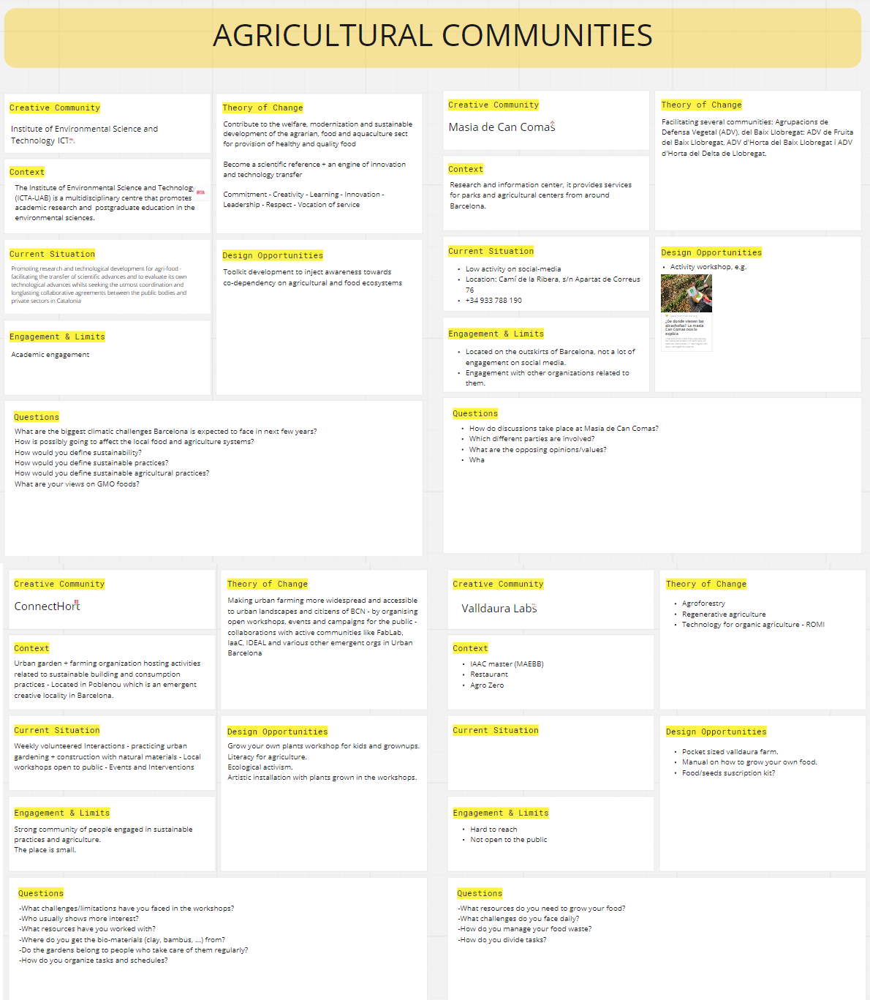
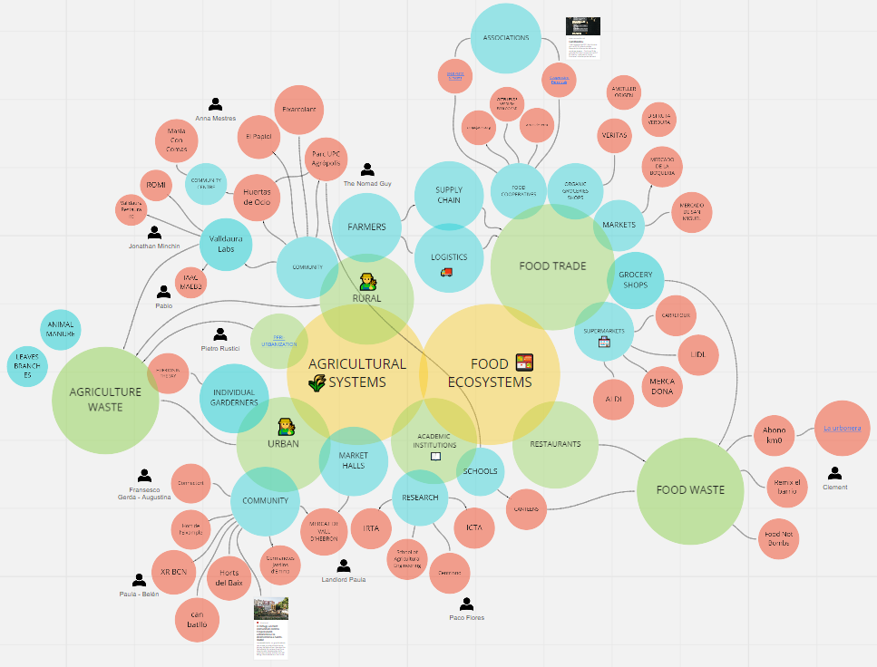

term 1
community engagement

human statures
On of the workshops in this week was to do three different human statures. The first stature should be the actual situation. The second one the desired system. And the third one the one how you are feeling. So first we collect people or things which include the education-system. At the end we had 46 words. Out of them we choose 12 which we think are the strongest ones. Then we separated our group in half so we have 12 actors and 12 observers. Each of the actors got one word and should represent it for the three statures. The first two went one-by-one and the third one all together at the same time. Borka showed: Family and Culture, Roberto: Financial Stress, Pau: Teacher, Paula: Metal Health, Vikrant: Infrastructure, Jeremy: Self-Learning, George: Youtube, Nikita: Privilege, Audrey: Professional Industry, Ruben: Work, Andrea: Academic Research and Emilio: Loans.
It was really nice to see how the statures developed. The first one everybody was apart from each other, it looked really sad, the second one was already more connected but felt weird and not like a promotion picture and the third one everybody was connected somehow and it looked like a real connection. I think everyone would interpretate every role different. If we would change the people playing the roles the human pictures would look completely different, because of having other expectations, thoughts, personalities, background and experiences with this kind of words. Also it would have been nice to see how it would have been if the audience help the system or if you would do the same pictures with the real roles/things. All in all it was a really nice workshop.
community intervention
 Solar punc group we have different kind of topics in our mind. But we all like the topic agriculture, so we focus on that. First we brainstorm what kind of intervention we want to make. In the next step we create a map, where we show different communities, companies, facilities and people around Barcelona, who we could visit to gain information’s about agriculture or food – systems.
The next step was to check around Barcelona, which communities we would like to visit for which purpose and which questions we want to ask, therefor we create a table with the possible communities and the theory of change. We decided who is going to which place and when.
compost
For me its important to separate your trash. I think it’s an easy way to help reusing materials and recycle products. That’s why also here in Barcelona I am separating my trash, paper, plastic and general trash. But here is no possibility to reuse the bio-trash, which comes from cooking food or leaver etc. That’s why I decided to make my own compost on my terrace. So I bought a big bucket, organic soil, a plate for under the bucket and around 100 worms. I collected some leaves from the forest and carton-paper from school. I made some holes inside the bucket so in the end the compost-water/natural-fertiliser can come out. Then I start creating the layers. The first layers I wheat paper, which I put around 10 min into a bowl full of water. The next layer were the leaves, they are also for the worms to be able to hide underneath. The next, soil layer is the basic for the compost and above it I already separated the worms with their soil content. Then I waited a day until the worms were more relaxed and settle in their new home. So from now on everyday a put a bid of different kind of food trash to feed them, like carrots, potatoes, coffee-rest, zucchini and so on. Its important not to put any cooked food and no oranges/citrons.

personal
This week I asked myself many questions: Where comes the most of the trash from? Maybe from the pharmacy or biology? What can you do out of one -time used masks? How can you change the mindset of the people to think more holistic and sustainable? How can we make a faster effort out of bio-trash like food waste? Animals produce a big amount of manure which is not good for the environment, what can we do with it? Why we are still designing cars, which are causing a big amount of death? How can you show children’s more sustainability, because they are our future? How can you help people which are immigrating?
Also I was thinking a lot about waste in general. Where you have the most and worst trash? Restaurants and food trade causes also a big amount of trash. A big amount is shipped around the world, unfortunately also in Germany to Asia. Germany pays money to get rid of the trash, but Asia still need to deal with it and their own trash, which should be not the solution.
What changed me after this weeks already? I feel more connected with the group and get to know me much better. Also I understood that at each project you don’t have just negative sights, never, there is always something which helps you in your process, is it getting knew knowledge, getting new experiences, making connections with people or learning out of mistakes. Also in this weeks I got a big amount of new knowledge about agriculture, biology, technologies, coding or generating new ideas.